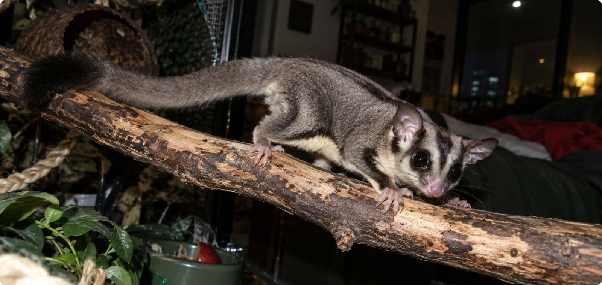
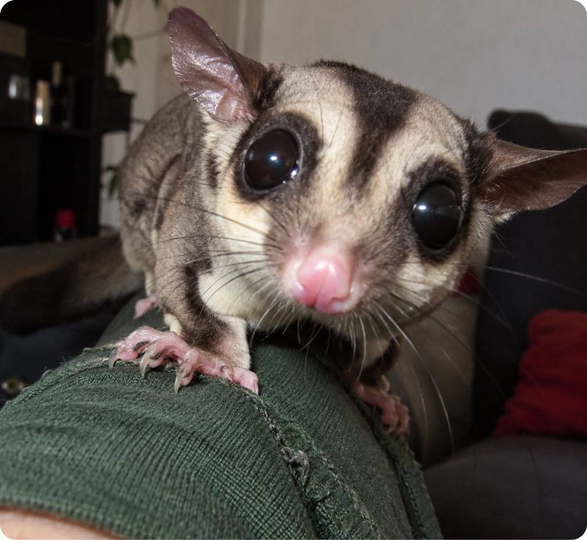
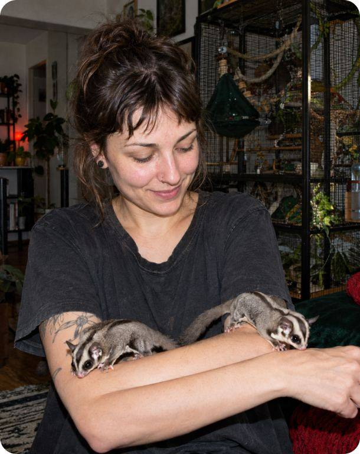
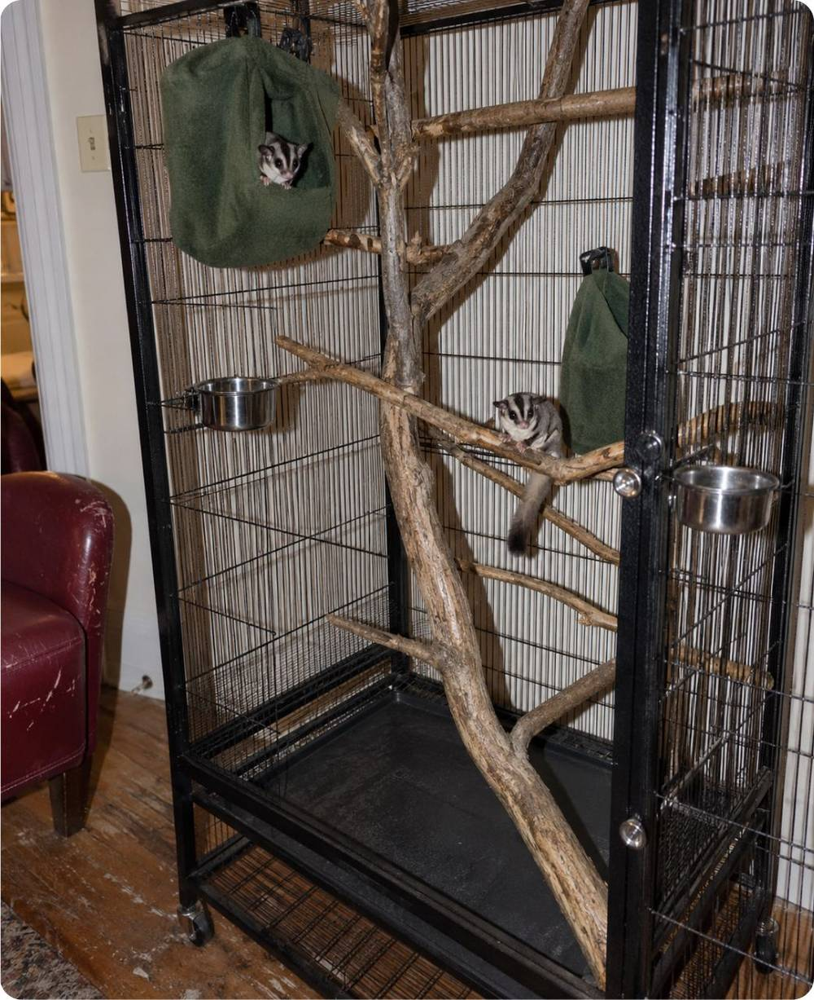
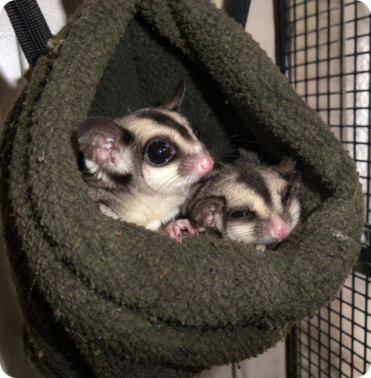
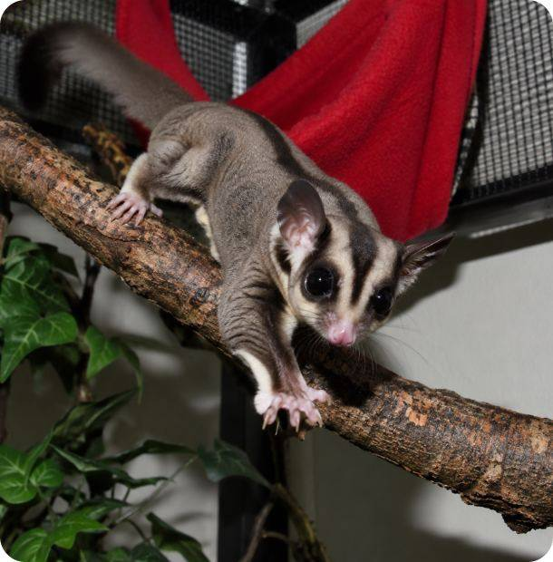

Статьи / млекопитающие
Сахарный поссум: что нужно знать до покупки
8 минут чтения
-Мэтч?

ночной зверь-Кто это вообще такой?

Сумчатое из Австралии и Новой Гвинеи, размером с ладонь. Между лапами у него кожистая перепонка — с ней поссум планирует с дерева на дерево, как маленький парашют
Днём поссум спит в гнезде, а ночью ищет еду и играет. Если вы жаворонок, это стоит учесть заранее
-А можно взять одного?
-нет!
В природе поссумы живут группами
Один зверёк быстро начинает скучать: может перестать есть и выщипывать себе шерсть. Поэтому заводить лучше сразу пару — им будет с кем играть, пока вы спите или на учёбе
Из интервью с владельцем
-«Я думала, поссум просто будет жить рядом. А теперь вечером он сам бежит ко мне на руки»

-Чем его кормить?
Можно
- +насекомые
- +смесь для поссумов
- +фрукты понемногу
Нельзя
- -шоколад и сладкое
- -лук и чеснок
- -одни только фрукты
-Где он будет жить?
В высокой клетке: поссумы любят лазать и прыгать. Ночью будет шуршать — это нормально
Что положить в клетку



-Какие ошибки делают новички?
- 1Покупают одного
И зверёк тоскует без сородича
- 2Кормят только фруктами
И питомцу не хватает белка
- 3Ищут ветеринара, когда уже поздно
Врачей для экзотов мало, лучше найти заранее